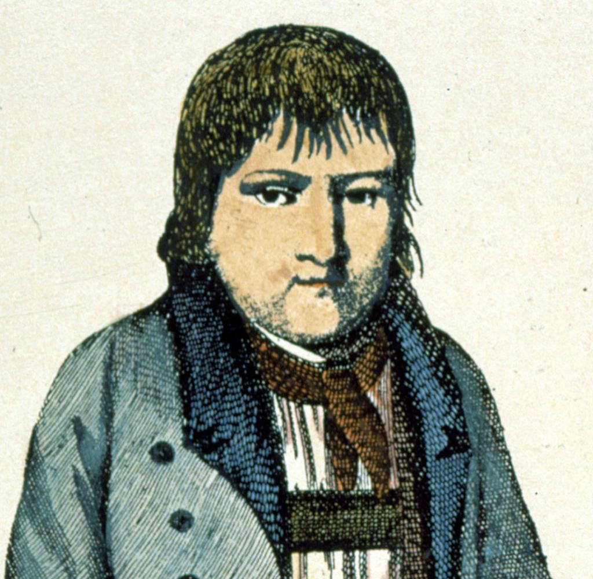

Wer war Kaspar Hauser?
Kaspar Hauser war ein mysteriöser Junge, der 1828 in Nürnberg auftauchte. Er behauptete, seit seiner Kindheit isoliert in einem dunklen Verlies gelebt zu haben, ohne Kontakt zur Außenwelt. Sein Auftauchen erregte großes Aufsehen, und es wurde spekuliert, er könne ein entführter Adeliger sein, möglicherweise der Erbe eines europäischen Throns. Trotz Bemühungen, seine Identität zu klären, bleibt sein Hintergrund ungeklärt. Hauser wurde 1833 unter mysteriösen Umständen erstochen. Sein Leben und Tod gaben Anlass zu vielen Legenden und Verschwörungstheorien, und er gilt bis heute als eine der größten ungelösten Rätsel der Geschichte.
Belege
Die Belege zu Kaspar Hauser sind:
- 1. Seine eigenen Aussagen: Er behauptete, isoliert aufgewachsen zu sein.
- 2. Zeitgenössische Berichte: Zeugen beschrieben sein merkwürdiges Verhalten und seine fehlende Sozialisation.
- 3. Adelstheorie: Es gab Spekulationen, er sei ein entführter badischer Erbprinz, aber keine eindeutigen Beweise.
- 4. Tagebücher und Briefe: Dokumente von Menschen, die ihn betreuten, belegen sein rätselhaftes Verhalten.
- 5. DNA-Analysen: Moderne Tests konnten keine verwandtschaftliche Verbindung zu badischen Adeligen nachweisen.
Link zu seinem Wiki Artikel
<